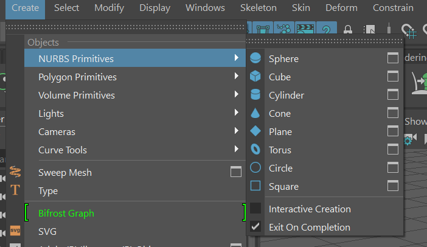
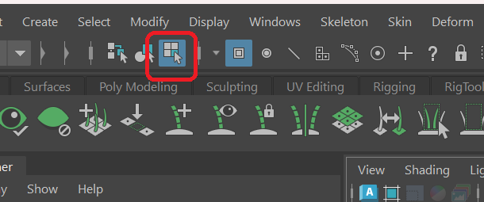
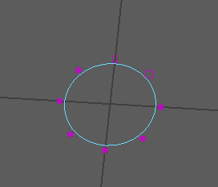
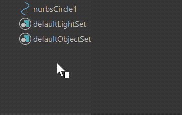
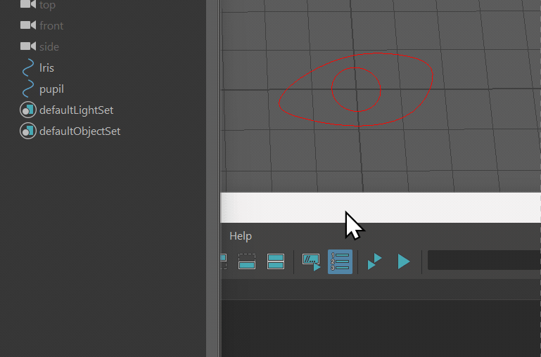
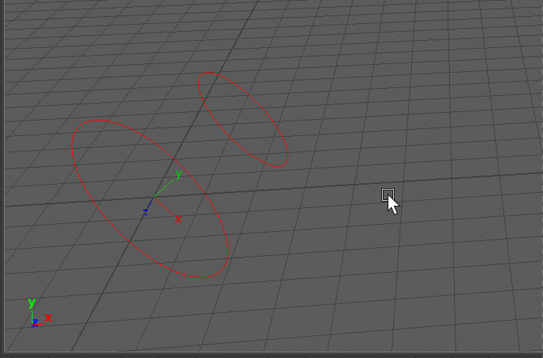
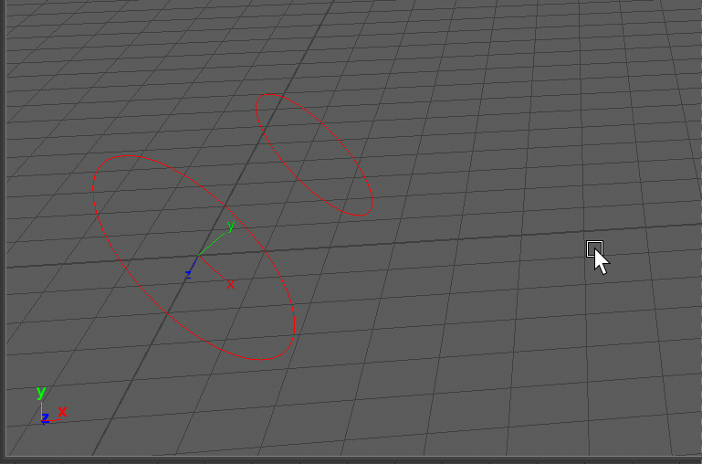
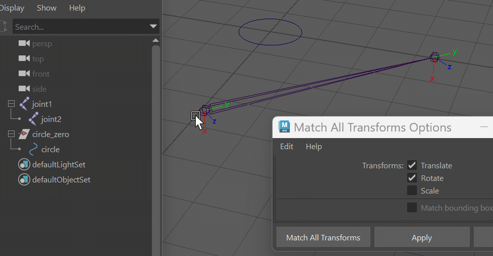
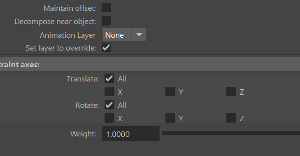
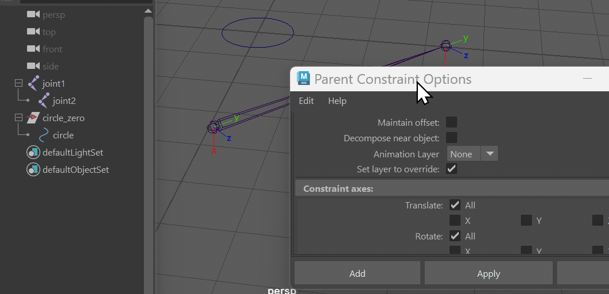

Rigging02-controller
什么是控制器
常见的控制器形状有各种曲线，图案，形状等，比如说这个 。也有
用关节作为控制器的，比如反向脚。所以控制器还是建立在约束关系上的，自身的形状更多是给动画师行个方便。
为什么用控制器
- 像文章封面一样，控制器封装了骨骼的复杂性，让动画师专注摆 pose。后续修改骨骼等，也尽量不影响到控制器和动画师的 k 帧数据。
- 导出骨骼时候更方便，干净，因为控制器靠约束关系，不会直接一个一个的插入到骨骼层级中。
创建控制器
maya 本身提供了一些曲线和方式绘制控制器。

有关控制器的一些快捷键
- 快捷键 q 用来选中对象，w 用来移动对象，e 用来旋转对象，r 用来缩放对象，都可以用在控制器身上
- 选中控制器，并且按下 r 之后，保持按下鼠标中间并左右拖动，可以同时缩放三个轴方向
- 保持按下 d 键，可以修改控制器中心点 (pivot) 位置
自定义控制器形状
- 选择Select by Component Type, (快捷键 F8)

, 此时圆圈会变成这个样子

, 可以选中这些点来改变形状 - 将不同控制器形状组合为一个控制器
创建 Primitives 和 curve 由 transform 和 shape node 组成。一般在大纲里面只能看到 transform node。
通过右键点击大纲栏，在出来菜单勾选 Shapes 选项，就可以看到 shape node
合并前确保对控制器进行 freeze transform 操作。该选项在 modify -> freeze the transform
选择一个或多个 shape node, 选择想要一个 transform node, 在控制台输入 Mel 命令 parent -s -r
就可以合并，然后将不需要的 transform node 删掉即可。

控制器的移动，旋转
控制器的移动和旋转都可以在世界坐标和局部坐标中进行。
世界坐标以世界的唯一坐标轴为准, 在窗口左下角可以看到。
局部坐标是以父亲节点的坐标轴为准。
按下 w, 同时按下鼠标左键并移动，可以弹出快捷菜单，切换移动坐标轴。

按下 e, 同时按下鼠标左键并移动，可以弹出快捷菜单，切换旋转坐标轴。

将控制器方向与关节方向对齐
为了动画师方便k动画，一般直接调整控制器方向，而是将控制器加入一个 zero 组，由 zero 组来控制
方向，进而调整子节点控制器的方向，还可以保证控制器在子节点中的 translate 和 rotate 属性为 0, 便于
动画师重置控制器。
- 选中 zero 组和要对齐的关节，选择 modify->match transform

里面可以选择要对齐的三个方面： translate, rotate, scale。
- 先选中要对齐的关节，然后选中 zero 组，选择 constraint -> parent

注意要取消勾选 matain offset, 这样 控制器才能移动关节上。
镜像复制控制器
- 创建一个空组, 假设叫 left_grp，将 left_grp 组的中心点放在对称平面处。
- 将所有控制器组加入到 left_grp 组中, 然后将 left_grp 进行复制，叫做 right_grp。
- 将 right_grp 组的垂直于对称平面的轴的 scale 分量设置为 -1。
假设要关于 xy 平面对称，则设置 right_grp 的 scaleZ 为 -1。 - 将 right_grp 的控制器取出来，删除 right_grp。
info 复制的控制器未必与关节方向对齐，只是位置复制过去了，要进一步确保方向对齐
本博客所有文章除特别声明外，均采用 CC BY-NC-SA 4.0 许可协议。转载请注明来源 窝窝乡！
评论

{kind=link}